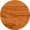
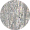
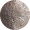
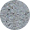

Zandstralen of luchtgommen
Met zandstralen of luchtgommen wordt bedoeld dat met behulp van een compressor en perslucht het juiste straalmiddel tegen voorwerpen wordt geblazen. Het gebruikte materiaal hangt af van het te stralen voorwerp.
De behandelde materialen kunnen zijn:
- 
Hout
Om deze zo vrij te maken van vernis, verf, beits of verontreinigingen.
- 
Metaal
Bijvoorbeeld staal en ijzer, om deze zo vrij te maken van roest, verf of verontreinigingen.
- 
Brons
Om het op te ruwen voor verdere behandeling, bijvoorbeeld patineren.
Glas
Om diverse oppervlakte-effecten te bereiken die gevolg hebben voor de doorzichtigheid ervan.
- 
Beton
Deze wordt ontdaan van alle mogelijke verontreinigingen en/of verf.
Onze specialisatie is vooral alle soorten hout.
Hout kan gezandstraald worden om dikke lagen verf en vuil op een efficiënte manier te verwijderen. Donker gekleurd hout krijgt op deze manier een lichtere, moderne uitstraling. Klassieke, oude eetplaatsen krijgen bij ons een nieuwe look zodat u er terug jaren graag naar kijkt. Door het zandstralen wordt de oorspronkelijke houtstructuur beter weergegeven.
Het zandstralen of luchtgommen gebeurt bij een aangepaste druk, met wit gedroogd kwartszand. Dit zand heeft een zeer hoge zuiveringsgraad, is een uniforme harde korrel en vlot verwerkbaar. In principe kan alle hout gezandstraald worden, maar er zijn verschillen. Hoe harder het hout (eik, beuk,…) hoe mooier het resultaat. Bij zachtere houtsoorten zoals den worden de nerven dieper. Elk soort hout heeft een aangepaste aanpak nodig.
Na zandstralen of luchtgommen kan het hout op verschillende manieren behandeld worden, afhankelijk van het gewenste resultaat. Indien de klant dit zelf wenst te doen, zal ik voldoende advies geven voor een perfecte afwerking.